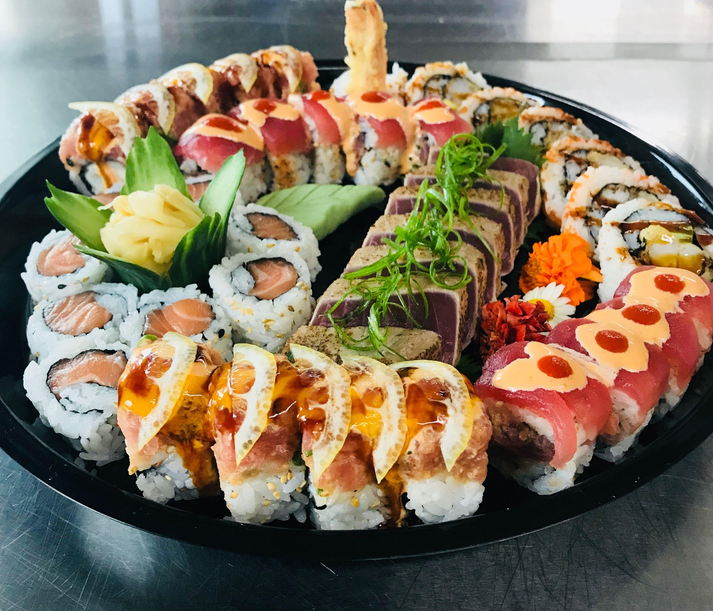
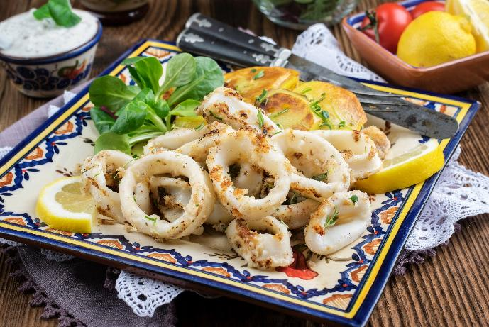

Island Favorite
Ahi Poke
Fresh yellowfin tuna tossed with sesame oil, soy sauce, green onions, and island-seasoned rice.
A tropical Beach side Resto-bar with an amazing and peak food options
Deep ocean flavors, island-inspired plates, and a relaxed beachside atmosphere — served with a little shipwreck adventure.
Explore the Menu →11 signature plates, each with its own flavor and story.
Fresh yellowfin tuna tossed with sesame oil, soy sauce, green onions, and island-seasoned rice.

Plump shrimp sautéed in rich garlic butter with herbs, lemon, and a savory island finish.

Wild-caught mahi mahi grilled over high heat, finished with bright mango-pineapple salsa.

Golden crab cakes packed with sweet crab meat, island herbs, and tangy passionfruit aioli.

A generous feast of lobster, garlic mussels, crispy calamari, grilled scallops, and crab legs.
Tender grilled salmon seasoned with garlic, herbs, and lemon, served with vegetables.

A colorful selection of salmon, tuna, California rolls, and spicy tuna rolls with traditional sides.

Al dente pasta tossed with mussels, squid, scallops, and shrimp in creamy garlic-herb sauce.

Crispy golden-battered cod served with seasoned fries, fresh lemon, and creamy house sauce.

Tender char-grilled squid with garlic and herbs, paired with crispy onion rings.
Seasoned grilled tuna skewered with colorful peppers and onions, finished with a sweet tropical glaze.
Fresh, tropical, colorful, and made with love.
A vibrant blend of pineapple, orange, passion fruit, and grenadine, served over ice with a fresh orange slice and cherry. Its bright tropical flavors capture the feeling of watching the sunset from a beachside resto-bar, giving every sip a heavenly feel. Crafted with pure passion and love, it's the perfect signature drink to pair with OJ Seafoods' fresh seafood dishes.

Blue citrus syrup, lemon-lime soda, and fresh lemon over ice.
Fresh mango, pineapple juice, and crushed ice blended smooth.
Fresh strawberries, lemonade, and crushed ice.
Pineapple juice, coconut water, lime, and ice.
Passion fruit juice, lemonade, and a touch of honey.
Fresh cucumber, homemade lemonade, and mint.
Fresh calamansi, chilled water, and just the right sweetness.
Homemade lemonade layered with strawberry puree.
Chilled coconut water, coconut milk, and a hint of vanilla.
Started by a group of students that wanted to start a tropical Resto-bar and turn their love for great food, the ocean, and creativity into a unique dining experience. OJ Seafoods brings together fresh seafood, tropical flavors, refreshing beverages, and a laid-back beachside atmosphere — all created as a project by students with a shared vision.
Romyna Reign Loy
Hungry? Need a delivery? Reach the crew here.
12-Oracle • Group 2